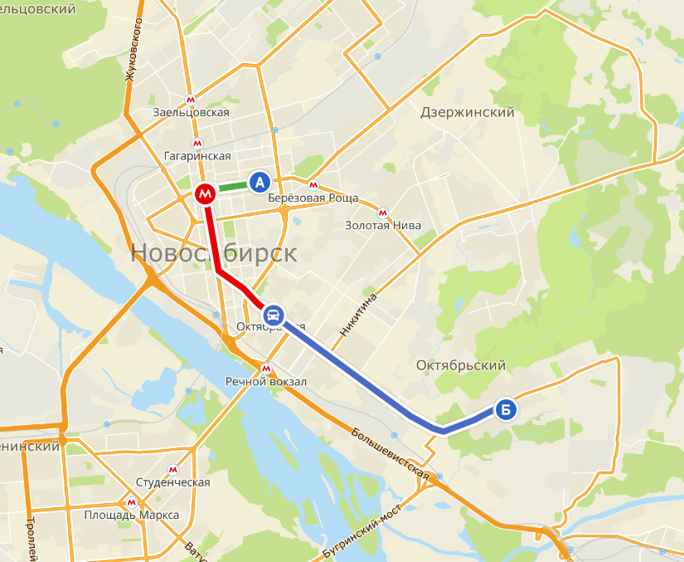
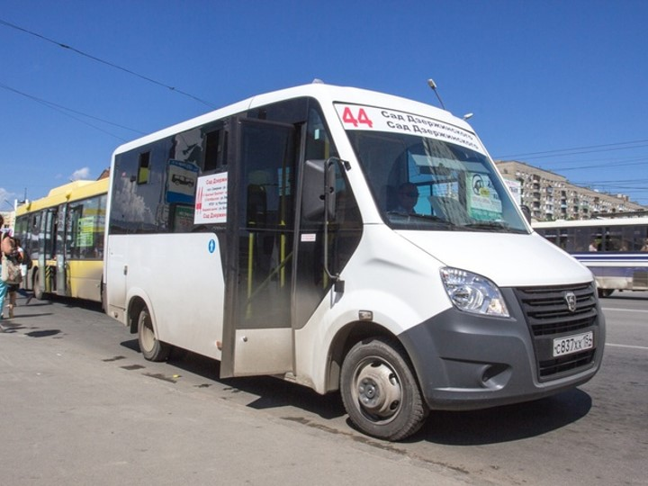

GAZeli on a Not So Open Plain
The Marshrutka Stampede in Novosibirsk
This is a story about what my daily commute has taught me about Novosibirsk and how the life of the city is reflected in a certain mode of transport - the so called marshrutnoye taksi ('fixed-route taxi'), marshrutka for short.
"Novosibirsk, Novosibirskaia Oblast'." Map. 2GIS. https://2gis.ru/novosibirsk
The map above outlines the three legs of my daily commute. The first leg is pictured in green and represents travel from the metro station "Marshall Pokryshkin" to the metro station "Sibirskaia" (Siberian). After crossing through an underground tunnel, I embark on the second (red) leg of my journey from the metro station "Krasnyi Prospekt" to the "Oktiabrskaia" station. From Oktiabrskaia, I emerge from the metro to wait at the bus stop, at which point the real fun begins.
At the bus stop, me and most of the student body of the Novosibirsk State Pedagogical University (NGPU) nervously scan the October thoroughfare for incoming transport that will whisk us the rest of the way to the university (point Б on the map). There are only three options we can hope for - the 18 bus, the 75 microbus (a "Pazik," more on this later), and the 45 marshrutka. Of these three, the 18 and the 75 are fickle ghosts the punctual student commuter cannot depend upon; the 45 marshrutka (make: GAZel' Next) is by far the best bet.
The GAZel' Next, route number 44. The name is a pun mixing the Russian word for gazelle with the name of the company that makes the vehicle - GAZ ('gas'). Picture Source
Yet, for all the 45's frequency, it is plagued by a disease endemic to most of Novosibirsk's ungulates on wheels - overcrowding. As the 45 pulls up to Oktiabrskaia, its front door swings open to reveal a crush of passengers. Out of those waiting on the bus stop, the most daring (read: aggressive) throw themselves with abandon into the mass, the most timid cling to their hopes that the next won't be so full. In order to get to the university on time, I try to politely pack myself into the marshrutka, imagining my students and colleagues' frustration were I to arrive late.
Though the ride is only 20 minutes, it is a thoroughly transformative journey. Often I find myself functioning as a door, pushed so far back onto the steps leading to the main cabin that the door and I move with the same pneumatic inswing. At other times, I become a human blind spot, crammed into the front corner of the ungulate such that I obscure the passenger-side mirror.
For a while, I abided these exhausting rides with shy and silent resignation - choosing to avoid the gaze of other passengers and absorb myself in the glowing LED light of my phone. This self-isolation continued until one fateful encounter with an ironic marshrutka sign. The crush that day was particularly oppressive, and I was pushed against the wall of the cabin staring straight at a sign stuck to the wall which read: "The transport of standing passengers is strictly forbidden." Marked with the stamp of municipal approval, this sign brought me to some larger questions about the existence of the marshrutka: Why are the marshrutkas which supposedly refuse to carry standing passengers so full of them? Is there anything about Novosibirsk itself that contributes to the excessive passengership? And, in general, what sets the marshrutka apart from other modes of transport in the city?
Urban Planning and the Marshrutka
One way to investigate the origins of the marshrutka crush is through studying the history of urban planning in Novosibirsk. The history of the city is marked by periods of rapid growth and constant change. According to an architectural history of the city written by Sergei Nikolaevich Balandin, the city's growth was fast-tracked by the construction of the Trans-Siberian railroad in the 1890s and the Altaian railroad running up from the South. After the Civil War, the city became the administrative center of Siberia, chosen as the regional headquarters of the Communist Party. During the 30s through the war, the city underwent rapid industrialization driven by the first five-year plan and the evacuation of factories and workers from the besieged Leningrad. From a village of about 20,000 in 1893, the city reached a population of 1,000,000 by 1960. This rapid population growth was accompanied by the often haphazard construction of housing for those working in the new administrative and industrial center. As the famous local architect A.D. Kriachkov mentions, architects were invited to the city almost exclusively to fix projects gone awry, rather than to plan the city's development. This constant project of construction and re-construction has led many local historians to conclude that Novosibirsk is really 5 different cities in one - the new each constructed on the bones of the old.
Today, these historical issues are compounded by modern-day issues with population density. Local historians Igor Maranin and Konstantin Oseev attribute part of this problem to the geographic constraints on the city's growth - the center of the city is confined by the Ob' river to the West, the railroad tracks to the north, and the small river Kamenka to the South. According to a municipal study forecasting the city's growth up until 2030, the territory of the city center comprises about 1% of the total territory of the city. This means that most people have to commute from the outside in. In addition to geographic constraints, the influx of international investment and development has led to the construction of "Novostroiki" and "Mnogoetazhki" ('Housing Developments' and 'high-rises') which have considerably increased population density in certain areas of the city. Many older generations of Novosibirtsy bemoan the consequences of these developments. One school teacher who I talked to mentioned that her school, originally built to teach 700 students, now teaches 1,700.
These issues with population density may explain the continued pervasiveness of the marshrutka. Historically, marshrutkas served to shuttle people from the center to the outskirts of cities - to so-called sleepy districts, the suburbs, and the countryside. In Novosibirsk, marshrutkas continue to fulfill this long distance function funneling people between surrounding districts and the comparatively small city center.
Somewhere Between Private and Public
Besides pointing me to the history of Novosibirsk's urban layout, marshrutkas also serve as a window into the public and private lives of Novosibirtsev. When you are stuffed into a marshrutka, unable to rotate head or body, there is nothing to do but look and listen. You are involuntarily immersed in the lives of others - staring at their phone contacts: mom, compote, brother, fish; their text conversations with loved ones: miss you, kitty; and their long goodbyes: давай, всё, до встречи, передай привет Кате, хорошо, всё давай, пока, до встречи. The private lives of all the passengers are open for everyone to partake in. Every word, glance, or shuffle will be noticed by others - that's just the way things are.
The open nature of the marshrutka makes it a hall of mirrors - reflecting the daily lives of passengers. In the early morning, the mood is solemn like that in a bedroom after the alarm has gone off. For the 9 o'clock commuters of the later morning, the marshrutka is an extension of the office - a place for business calls, negotiations, and meetings. After the end of the workday, the mood again shifts to the domestic front and many passengers can be found discussing what soup to cook for dinner. After 7 o'clock, the marshrutka becomes a pub frothing with the noise of banter, snickering, and long swigs of beer.
The blend of public and private characteristic of the marshrutka has its origins in the collapse of the Soviet Union. According to historian Anna Sanina, cities suddenly tasked with running a privatized municipal transport system contracted private companies to buy vehicles and hire drivers. Given the dire economic situation in Russia in the 90s, most cities did not have the resources to buy buses and pay to fuel and heat them. The GAZel' marshrutka was an attractive alternative - given its smaller size it could be stored easily and cost less to heat and fuel. Not only this, but the marshrutka could charge a higher fare while not offering discounts to "льготники" (welfare-reliant passengers) like pensioners and students. The higher fare and lack of discounts contribute to a distinctly different atmosphere than that of other modes of public transport. While most municipal transport plays audio recordings appealing to "уважаемые пассажиры" (respected passengers), the relationship between driver and passenger on the average marshrutka is one of hostile negotiation and mutual disrespect. Passengers often yell at drivers who skip their stop; drivers talk about their passengers like sardines: "Ну чё, накидался?" (so've you packed it full?).
The interaction between driver and passengers is a source of great entertainment while riding the marshrutka. While there is a relatively limited vocabulary used to call out stops and switch places in the cabin, their meaning is not immediately clear. For this reason, I've compiled a brief glossary of marshrutka phraseology.
| Passenger or driver? | Phrase | Literal Translation | Implied Meaning |
| Passenger: | Вы выходите? | Are you getting off? | You're probably going to have to get out of my way. |
| Driver: | Продвиньте дальше в салон! | Move further into the cabin! | Cozy up to your neighbor! |
| Passenger: | Передайте, пожалуйста! | Pass it please! | Grab this handful of change and bucket brigade it to the driver. |
| Passenger: | Заднюю откройте! | Open the rear door! | I'm not walking through this crowd of people! |
Final Thoughts and Questions
Despite the madness, I am grateful to the marshrutka for forcing me to pay closer attention to Novosibirsk and Novosibirtsy. It is a harsh, but seemingly beloved mode of transport - a good example for teaching my students the meaning of the phrase "love-hate relationship." The upside of the challenges presented by a marshrutka dominated transport system is a populace desiring change and willing to examine the problems inherent in the system more closely. I have found that many of my students have at least expressed a desire for change in the transportation system, if not an outright curiosity in the discipline of urban planning. In Moscow, marshrutkas such as those in Novosibirsk have been almost completely replaced by municipally run marshrutkas perhaps more deserving of the name "shuttle-bus" than "fixed-route taxi." The question remains as to the future of the marshrutka in cities outside the capital. Will the urban ungulate go extinct all together, or will it continue to thrive on the paved and pot-holed plains? For now, it seems, the marshrutka is here to stay.
I'd like to acknowledge the help of Olesya Valger in clarifying some of my questions about the municipal transport system. Also, thank you to Alexander White for encouraging me to write something about this.